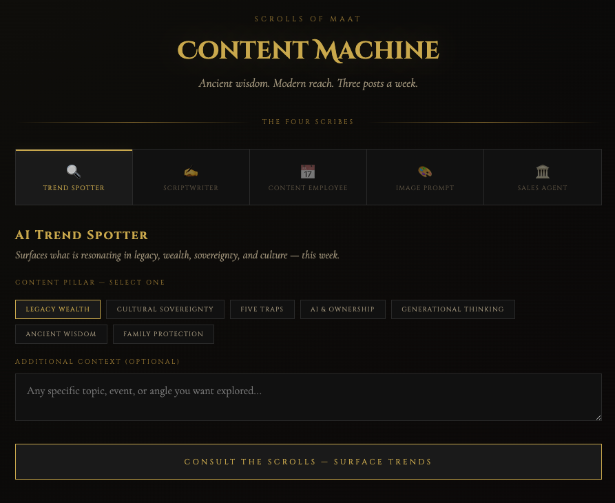

The Campaign

Entrepreneur of Impact campaign — visual identity by Moor Graphix
93 entrepreneurs. One cash prize. One Entrepreneur Magazine feature. One mentorship with Daymond John. Moor Graphix entered the 2026 Entrepreneur of Impact competition representing 3 brands — and finished in the Top 3 nationally. Zero ad spend. Zero outside agency. One studio. One vision. A community that showed up.
Entrepreneur of Impact campaign — visual identity by Moor Graphix
The 2026 Entrepreneur of Impact competition drew 93 entrepreneurs from across the country — all competing for one prize package that included cash, an Entrepreneur Magazine feature, and a mentorship session with Daymond John.
Sid Washington entered representing not just himself, but three brands built on purpose, cultural identity, and a philosophy most competitions aren't designed to hold. The goal wasn't just to accumulate votes. The goal was to demonstrate what happens when a purpose-driven brand runs a real campaign — with real strategy, real creative, and a real community behind it.
Every asset built. Every word written. Every graphic deployed — all produced inside the Moor Graphix production house.
Most competition campaigns run on the same playbook: ask your network, post a link, hope for numbers. Moor Graphix ran a different campaign — one built on three strategic principles that reframed what a vote meant and who the audience was.
The result wasn't just a higher vote count. It was a community that didn't just vote — they recruited.
Every post led with story and community identity. The vote request came second — always. People don't respond to asks. They respond to something worth being part of.
The campaign's most powerful asset wasn't designed — it was discovered. A childhood photo of Sid holding a baby shark became the emotional anchor of the entire campaign. He didn't manufacture symbolism. He found it in real life. The hashtag: #DestinedForTheShark.
Votes were never framed as a personal favor. They were framed as collective investment in something being built. That shift in language changed everything — people didn't just vote, they became ambassadors.
Every deliverable was produced inside the Moor Graphix studio — from concept through deployment. No outside vendors. No stock templates. No generic creative. The campaign demonstrated exactly what Moor Graphix builds for clients: a complete, platform-specific creative ecosystem with one unified voice across every touchpoint.
Platform-specific tuning was built into every asset. The same message executed differently for Instagram, Facebook, LinkedIn, Twitter/X, TikTok/Reels — because a one-size-fits-all campaign performs like one.
Dark/gold editorial aesthetic · Syne typography system · HeyGen avatar video · ElevenLabs voiceover · In-house copywriting · Multi-platform optimization

The final result was a Top 3 finish out of 93 national competitors — competing for a prize package that included cash, an Entrepreneur Magazine feature, and mentorship from Daymond John. The campaign produced that result with zero paid media, zero outside creative support, and zero PR infrastructure.
A small brand with the right strategy, a clear voice, and production-quality creative can compete at any level. Moor Graphix didn't just compete — it demonstrated its own methodology in public, under competitive pressure, with the result documented for every future client to see.
By framing votes as collective investment in something being built, the campaign unlocked a different energy. People didn't just vote — they recruited. The language shift from "help me" to "join something" made every supporter an extension of the campaign.
Every graphic, caption, video script, email template, and campaign page was built inside the Moor Graphix studio. The campaign is a live demonstration of the full-service production capability Moor Graphix deploys for clients.
Instagram, Facebook, LinkedIn, Twitter/X, TikTok/Reels, email, and web — each platform received platform-specific creative and copy tuned for its audience and algorithm. One message. Four different executions. Zero generic posts.
The case study, social series, and one-pager produced from this campaign now serve as credibility assets for Moor Graphix — deployed before every sales call, embedded on the website, and running as evergreen content that works without active management.
Every lesson learned in the EOI campaign is directly applicable to client brand strategy. This is what Cultural Alchemy in practice looks like — and what Moor Graphix builds into every engagement.
| What We Learned | What It Means For Your Brand |
|---|---|
| Story moves people — asks don't | Lead with identity before CTA. Your audience needs to know why it matters before they're asked to act. The ask is the last sentence, never the first. |
| Authentic specificity beats clever concepts | Your real story — the childhood photo, the family name, the specific moment — is your most powerful brand asset. We find it and forge it into creative. |
| Community investment > personal favor | Position your audience as co-builders, not favor-granters. When people feel like they're part of something being built, they don't just convert — they recruit. |
| Platform-specific tuning matters | One message needs four different executions. The same post doesn't work on LinkedIn that works on TikTok. Platform-specific creative is the difference between ignored and shared. |
| Visual consistency builds trust faster than copy | Your aesthetic is your first impression. Before anyone reads a word, they've already made a judgment about your brand. Consistency across every touchpoint makes that judgment work for you. |
"A small brand with the right strategy, a clear voice, and production-quality creative can compete at any level. That's what Moor Graphix builds for every client."
— Sid Washington, Moor Graphix
The EOI campaign wasn't just a competition entry. It was a live test of the Moor Graphix methodology — Cultural Alchemy executed under real competitive conditions with a documented result.
The same principles that moved a community to vote drove a small brand into the Top 3 nationally. Those same principles are what we bring to every client engagement. The difference between brands that win and brands that post is strategy, story, and production quality. All three are what Moor Graphix delivers.
A grassroots creative and community campaign that helped Moor Graphix place in the Top 3 of 93 entrepreneurs competing in the Entrepreneur of Impact competition — with no paid advertising and no outside agency.
Through one studio's creative output and a community that showed up organically — direct engagement and content, not paid media.
That a focused creative vision and genuine community support can outperform larger, better-funded competitors.
If you watched what Moor Graphix built for this campaign and thought "I need that for my brand" — that's exactly the work we do. We don't just build pretty things. We build campaigns that move people.